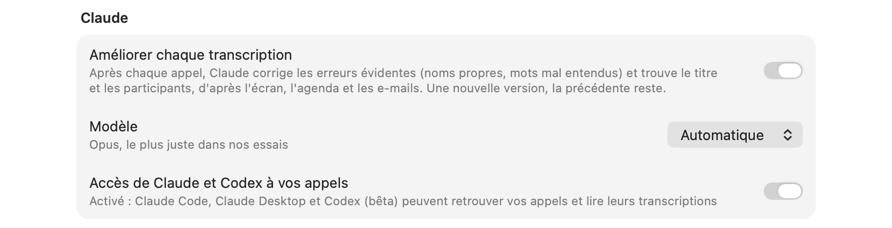
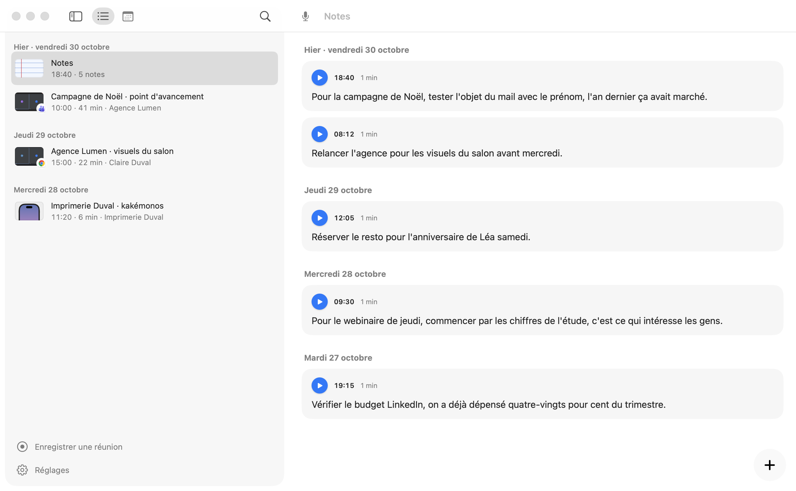
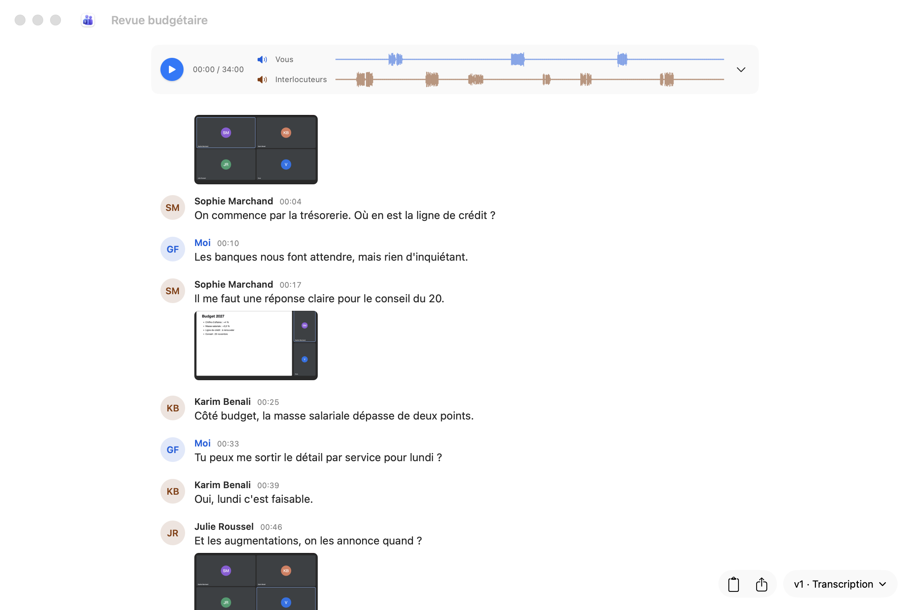
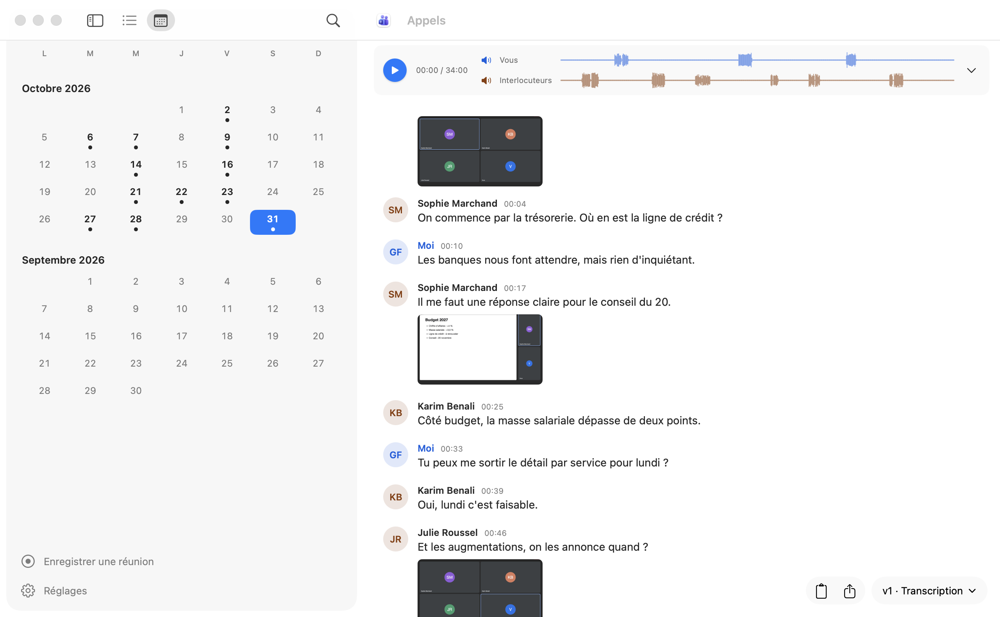
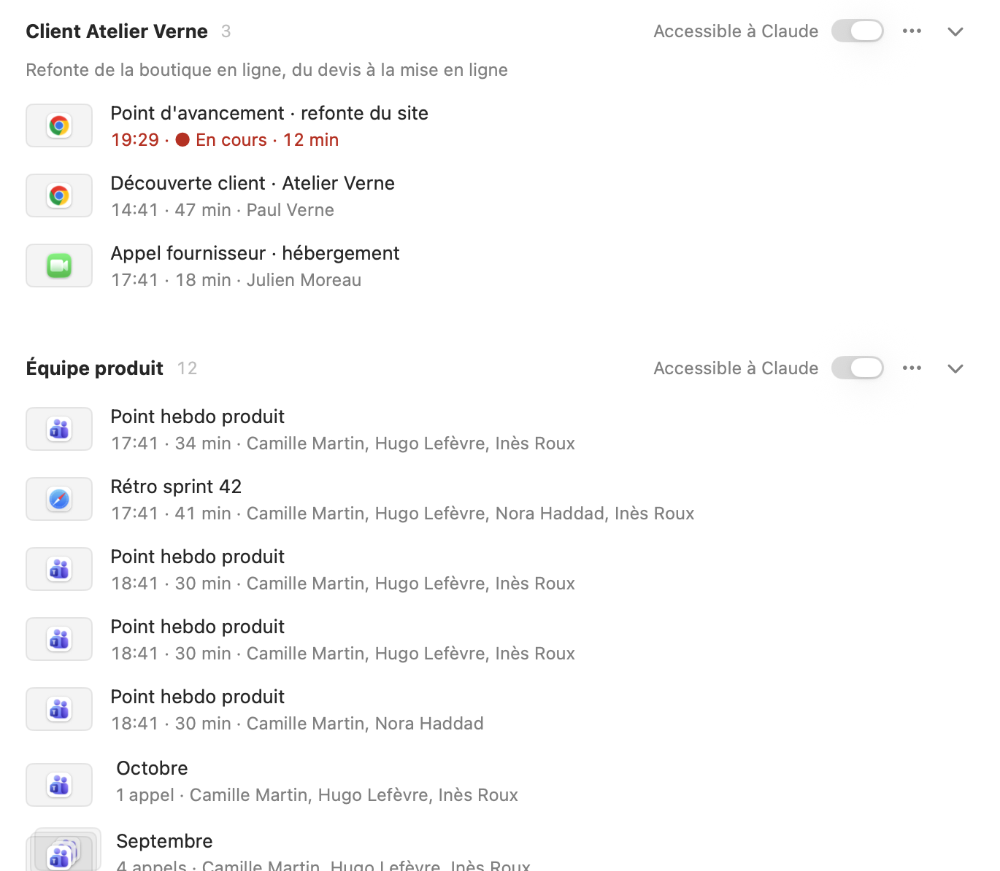
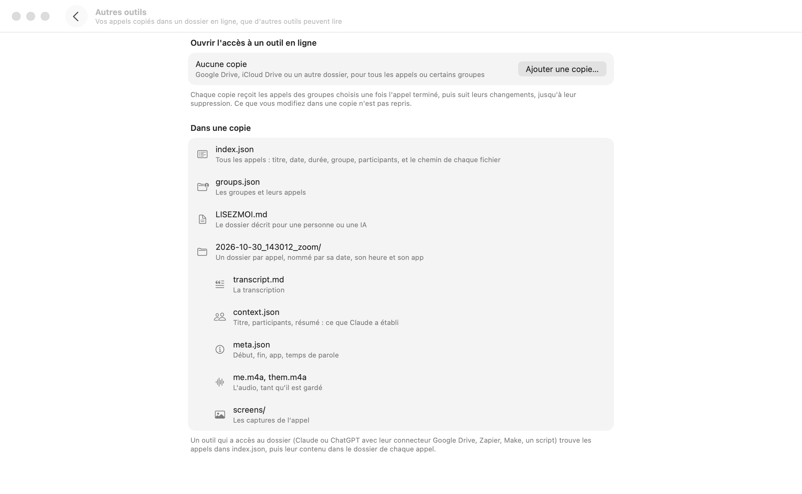

Fonctionnalités
Claude, Codex et les autres assistants consultent votre mémoire
Demandez à Claude « Qu'est-ce que j'ai promis à Paul jeudi ? » : il retrouve l'appel, le lit et vous répond, citations à l'appui. Claude Code, Claude Desktop et Codex (en bêta) sont reliés dès l'installation.
Callrecorder est un serveur MCP local : Cursor, VS Code, Gemini CLI, LM Studio et les autres assistants compatibles s'y branchent en trois lignes de configuration.

Chaque appel est retenu tout seul
Callrecorder repère le moment où une app d'appel se sert du micro, et enregistre les deux côtés de la conversation jusqu'à ce qu'elle raccroche. Zoom, Teams, Google Meet, FaceTime, WhatsApp, Slack, Webex, Loom, Messenger, Doctolib, Jitsi : dans leur app ou dans Safari et Chrome.
Siri et la dictée ne déclenchent rien. Chaque app et chaque site a son interrupteur dans les Réglages, si vous préférez en laisser de côté.

Les réunions en face à face aussi
Un rendez-vous sans visio : posez le Mac sur la table et lancez l'enregistrement d'une réunion, depuis la barre des menus ou la fenêtre Conversations. La conversation est transcrite comme un appel : chaque voix reçoit un numéro et une couleur, et la vôtre devient « Moi » une fois apprise sur vos notes et vos appels au casque.

Les appels de votre iPhone
Avec Continuité, le Mac sert de combiné à l'iPhone : les appels pris sur le Mac sont enregistrés. Il n'y a rien à installer sur l'iPhone, et rien à brancher.
Et Android ? Callrecorder n'enregistre plus les appels Android dans sa version publiée. Il fallait garder le téléphone branché au Mac et laisser le débogage USB activé, ce qui ne tient pas dans une journée normale. Une app Android est en préparation et s'essaie d'abord en bêta. Les appels Android déjà enregistrés restent dans votre mémoire.

Une idée vous vient : dites-la, elle est notée
Où que vous soyez sur le Mac, fn + D ouvre vos notes et enregistre ; parlez, puis Entrée. La note est transcrite aussitôt, datée, à réécouter, et Claude la lit comme vos appels : « Range ce que je me suis dicté cette semaine ».
Un passage d'appel peut aussi devenir une note : surlignez-le dans la transcription, il garde l'appel d'où il vient, qui parle et à quel moment. Le même geste l'envoie à Claude avec ce qui l'entoure, ou corrige la réplique sur place.

La transcription est prête peu après l'appel
L'appel est transcrit sur votre Mac. Sur macOS 26, chaque passage l'est dans sa langue. Chaque réplique a son heure et se cale sur l'enregistrement : un clic sur une phrase la fait entendre.
À côté de ce qui se disait, les captures de la visio : l'écran partagé, la diapositive du moment. Pendant l'enregistrement, une pastille flotte par-dessus vos fenêtres pour capturer ou arrêter d'un clic. En réunion, chaque voix reçoit un numéro et une couleur.
Pour n'écouter qu'une voix, séparez les pistes : une rangée par voix, chacune qu'on coupe à l'écoute.
Claude peut ensuite la relire avec ce qui était à l'écran : les noms propres sont corrigés, l'appel reçoit un titre et ses participants. Chaque relecture est une nouvelle version, les précédentes restent dans le menu des transcriptions. Cette relecture se coupe dans les Réglages : la transcription, elle, reste faite sur le Mac.



Vos conversations se retrouvent par jour, par nom ou par mot
Une ligne par conversation, avec sa première capture, son app, son titre et sa durée. Le calendrier montre les jours où vous avez parlé à quelqu'un. La recherche (⌘F) fouille les transcriptions et se limite aux groupes de votre choix.

Claude range chaque appel dans le bon groupe
Un groupe réunit les appels qui vont ensemble : un client, un recrutement, le perso. Donnez-lui un sous-titre, et Claude y range les nouveaux appels après chaque conversation.
Un groupe peut rester hors des IA : Callrecorder ne montre ses conversations à aucun assistant et ne les copie pas. Si le dossier entier vit en ligne, elles y sont aussi.

Votre mémoire reste faite de fichiers à vous
Tout est dans un dossier de votre Mac, en Markdown ; ce dossier peut vivre dans Google Drive, iCloud Drive ou Dropbox. Une copie de certains groupes peut aussi partir dans un dossier en ligne, avec un index, pour ChatGPT, Zapier ou un script.
Chaque transcription s'exporte en texte, Word, Markdown ou sous-titres. L'audio part à la corbeille au bout de 7 jours, une durée réglable. Vous pouvez garder celui d'un appel.

Les nouvelles versions viennent à vous
Callrecorder vous propose chaque nouvelle version, et l'installe d'un clic. Le journal dit ce qui change.